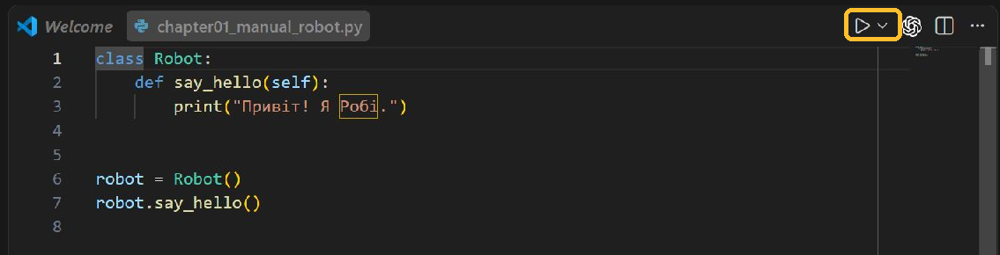

Розділ 01
Передбач · запускай · простеж · змінюй · створи
.py-файл і перший об’єкт#
У цьому розділі ми не встановлюємо редактор і Python. Вважаємо, що папка вже відкрита у VS Code, але окремо перевіримо два способи запуску: кнопкою редактора та командою у звичайному терміналі. Наше завдання — зрозуміти, що саме ми запускаємо, і відразу створити об’єкт, який щось робить.
Що зробимо#
Наприкінці розділу в папці буде файл robot.py. У ньому ми опишемо робота, створимо конкретного робота й накажемо йому привітатися.
Після запуску в терміналі має з’явитися повідомлення Привіт! Я Робі.. Ти знатимеш, де в коді опис об’єктів, де конкретний об’єкт, а де команда для нього.
Одна дія: створи robot.py, запусти його й знайди рядок, який справді наказує об’єкту діяти.
Якщо відволікся, повернися до виклику robot.say_hello(): саме з нього починається видима поведінка.
Що таке програма у файлі#
Відкрий у VS Code новий файл і збережи його як robot.py.
Звичайний .py-файл — це текстовий файл. Усередині немає прихованих деталей, спеціальних кнопок чи готової програми. Там лежать символи, які можна було б набрати навіть у найпростішому текстовому редакторі.
Розширення .py повідомляє людям і програмам: «цей текст написаний мовою Python». Завдяки цьому:
- VS Code підсвічує різні частини коду різними кольорами;
- редактор пропонує доречні підказки;
- операційна система може пов’язати файл з Python;
- іншим програмістам відразу зрозуміло, як файл запускати.
Сам код виконує не VS Code. VS Code редагує текст, а інтерпретатор Python читає команди й виконує їх. Кнопка запуску у VS Code лише передає відкритий файл вибраному інтерпретатору.
Інтерпретатор — програма, яка читає код Python і виконує його. Якщо VS Code показує код, але команда запуску не працює, проблема може бути не у файлі, а у виборі інтерпретатора.
Маленький експеримент із .txt#
Створи файл message.txt із таким вмістом і натисни Ctrl+S. Біла крапка біля назви вкладки має зникнути — це означає, що зміни записані на диск.
print("Цей текст виконав Python.")До запуску скажи вголос, що тут робитиме VS Code, а що — інтерпретатор Python. Потім перевір припущення командою для своєї системи нижче.
Якщо явно передати цей файл інтерпретатору, він спробує виконати вміст навіть без розширення .py. У звичайному Windows PowerShell, відкритому в папці з файлом, спочатку перевір обидві умови:
Test-Path .\message.txt
python --version
python .\message.txtНа перевіреному Windows-комп’ютері результат виглядав так; номер версії на іншому комп’ютері може відрізнятися:
True
Python 3.13.2
Цей текст виконав Python.Тут важливі всі три рядки:
Trueдоводить, що PowerShell справді бачить збережений файл у поточній папці.Python 3.13.2доводить, що саме зовнішній PowerShell знайшов інтерпретатор. Сам факт, що Python працює у VS Code, цього ще не гарантує.- Лише після двох перевірок запускаємо
python .\message.txt.
Якщо Test-Path показав False, не перемикай навмання версії Python: спочатку збережи файл і перевір його назву та папку. Якщо файл знайдено, але python --version не працює або Windows пропонує відкрити Store, спробуй launcher-команду:
py --version
py .\message.txtЯкщо VS Code запускає код через проєктне середовище .venv, а зовнішній PowerShell не знаходить ані python, ані py, з кореня саме цього проєкту можна явно викликати той самий інтерпретатор:
.\.venv\Scripts\python.exe .\message.txtЦей останній шлях працює лише тоді, коли папка .venv справді є в поточному проєкті. Її не треба вигадувати або створювати заради цього експерименту.
У Command Prompt замість Test-Path використовуй:
dir message.txt
python message.txtНа macOS або Linux спочатку перевір файл і команду так:
ls ./message.txt
python3 --version
python3 ./message.txtЦей експеримент не означає, що варто називати програми .txt. Інтерпретатору важливий вміст, але редакторам, інструментам і людям потрібна зрозуміла домовленість. Для Python-скриптів такою домовленістю є .py.
Майстерня#
Набери у robot.py цей код. Не вставляй нові команди, доки перша версія не запрацює.
Не запускай файл одразу. Визнач, чи надрукує щось сам опис класу Robot, скільки рядків з’явиться в терміналі та який рядок коду запустить друк.
class Robot:
def say_hello(self):
print("Привіт! Я Робі.")
robot = Robot()
robot.say_hello()robot ще немає, термінал порожній.robot існує, у терміналі є Привіт! Я Робі.- 1Опис
class Robot:Python запам’ятовує, які дії матимуть роботи; тіло методу ще не виконується.
- 2Створення
robot = Robot()З’являється конкретний об’єкт, на який посилається ім’я
robot. - 3Виклик
robot.say_hello()Крапка обирає метод об’єкта, а Python передає цей об’єкт у
self. - 4Видимий результат
print("Привіт! Я Робі.")Команда всередині методу записує один рядок у термінал.
Що тут важливо: Клас описує можливість, об’єкт є конкретним учасником, а виклик методу запускає дію.
Натисни Ctrl+S і перевір, що біла крапка біля назви вкладки зникла. Потім запусти файл кнопкою Run Python File у правому верхньому куті VS Code. Редактор відкриє вбудований термінал і передасть збережений robot.py вибраному Python.

Кадр зроблено у Windows. На macOS і Linux тема та службові кнопки можуть трохи відрізнятися, але виділений трикутник — команда самого VS Code. Відмінні команди запуску для кожної системи нижче показано текстом, а не вигаданими скріншотами.
У нижній панелі VS Code видно, який інтерпретатор вибрано. Звичайний PowerShell поза VS Code може знайти інший Python або не знайти жодного — тому перевірки python --version і py --version не зайві.
Очікуваний результат:
Привіт! Я Робі.Це вже об’єктна програма. Вона маленька, але в ній є три різні рівні.
1. Клас описує можливості#
class Robot:
def say_hello(self):
print("Привіт! Я Робі.")class Robot: починає опис роботів. Клас можна уявити як креслення або набір правил: кожен об’єкт, створений за цим описом, матиме передбачені можливості.
Назву класу пишемо з великої літери. Якщо слів декілька, кожне теж починаємо з великої: GameCharacter, MusicPlayer, SecretDoor.
Рядок def say_hello(self): описує дію. Дія, що належить об’єкту, називається методом. Назва say_hello читається як «скажи привіт».
Поки що сприймай self як слово «цей конкретний об’єкт». Воно дає методу доступ до робота, для якого викликали команду. У наступних розділах ми використаємо self, щоб кожен робот мав власне ім’я й заряд.
2. Відступ показує належність#
class Robot:
def say_hello(self):
print("Привіт! Я Робі.")У Python відступ — частина граматики. Він не просто робить текст красивим.
def say_hello(self):має чотири пробіли, тому метод належить класуRobot.print(...)має ще чотири пробіли, тому команда належить методуsay_hello.robot = Robot()стоїть без відступу, тому опис класу перед ним уже закінчився.
У VS Code клавіша Tab зазвичай додає потрібний рівень відступу. У Python прийнято використовувати чотири пробіли на рівень і не змішувати пробіли з табуляцією.
3. Об’єкт — конкретний учасник програми#
robot = Robot()
robot.say_hello()Robot() створює конкретний об’єкт за описом класу Robot. Ми даємо цьому об’єкту коротке ім’я robot, щоб звертатися до нього далі.
Крапка у robot.say_hello() читається так: «у об’єкта robot виконай метод say_hello». Порожні дужки означають, що зараз команді не передаємо додаткових даних.
Додай ще одного робота й виклич той самий метод для обох:
class Robot:
def say_hello(self):
print("Привіт! Я Робі.")
first_robot = Robot()
second_robot = Robot()
first_robot.say_hello()
second_robot.say_hello()Поки обидва поводяться однаково. Це нормально: ми вже створили два об’єкти, але ще не дали їм окремого стану. Саме це зробимо в наступному розділі.
Запуск через термінал#
Кнопка Run Python File зручна, але вона не є єдиним способом запуску. Відкрий у VS Code меню Terminal → New Terminal. Новий термінал зазвичай починає роботу в корені відкритої проєктної папки.
Windows: PowerShell або Command Prompt#
python robot.pyСучасна офіційна збірка Python для Windows рекомендує команду python. Якщо на конкретному комп’ютері вона не налаштована, часто працює launcher-команда:
py robot.pyPowerShell — це оболонка Windows, тобто програма, яка приймає текстові команди. Рядок на кшталт PS C:\Projects\Python> є запрошенням оболонки; його не треба набирати.
macOS: Terminal із zsh#
python3 robot.pyСтандартна програма для команд називається Terminal, а типовою оболонкою сучасної macOS є zsh. На Mac команда python може бути відсутня або вказувати не туди, тому поза активованим віртуальним середовищем використовуй python3.
Linux: Terminal із Bash або іншою оболонкою#
python3 robot.pyУ більшості дистрибутивів Linux інтерпретатор Python 3 також запускається командою python3. Символ $ у прикладах документації часто позначає запрошення оболонки; його не треба копіювати.
Що однакове#
Сам файл robot.py однаковий на всіх трьох системах. Зазвичай відрізняються команда запуску, вигляд шляху й назва оболонки. Після активації проєктного віртуального середовища команда часто стає однаковою — python robot.py; до цього повернемося перед зовнішніми пакетами.
Якщо термінал «не бачить» файл#
Команда python robot.py шукає robot.py у поточній папці термінала. Якщо файл лежить в іншій папці, Python повідомить, що не може його відкрити.
Перевір дві речі:
- У лівій панелі VS Code файл справді має назву
robot.py, а неrobot.py.txt. - Рядок термінала показує папку, у якій цей файл лежить.
Команда pwd показує поточну папку в PowerShell, macOS і більшості Linux-оболонок. Команда dir зручна у Windows, а ls — у macOS та Linux; PowerShell розуміє обидві форми.
Файл, скрипт і інтерактивний режим#
Python можна використовувати двома близькими способами.
Скрипт — збережений файл із послідовністю команд. Його можна запускати багато разів, редагувати, надсилати іншій людині й зберігати в Git.
REPL — інтерактивний режим, у якому Python читає одну команду, виконує її та одразу показує результат. Назва складається з англійських слів read, evaluate, print, loop: прочитати, обчислити, показати, повторити.
Щоб відкрити REPL у терміналі, введи лише команду інтерпретатора:
pythonабо на macOS/Linux:
python3Побачиш запрошення >>>. Тут зручно швидко перевірити вираз:
>>> 2 + 3
5
>>> "ро" + "бот"
'робот'Символи >>> не є частиною Python-коду. Вони лише показують, що інтерактивний режим чекає на команду. Для виходу введи exit().
REPL зручний для маленького експерименту на один-два рядки. Усі приклади, які потрібно зберегти, розширити або перевірити повторно, пиши у .py-файлах.
Рядки нижче перемішані. Перепиши їх у правильному порядку й віднови відступи. Спочатку має з’явитися опис, потім об’єкт, а вже після цього — команда об’єкту.
robot.say_hello()
def say_hello(self):
robot = Robot()
print("Привіт!")
class Robot:Очікуваний результат після запуску: один рядок Привіт!.
Типова помилка#
Приберемо двокрапку після назви класу й запустимо файл кнопкою Run Python File:
class Robot
def say_hello(self):
print("Привіт!")У терміналі з’явиться справжній traceback. Початок шляху нижче скорочено до ..., бо на кожному комп’ютері він інший:
File "...\robot_broken.py", line 1
class Robot
^
SyntaxError: expected ':'Розберемо його зверху вниз.
File "...\robot_broken.py", line 1— Python називає файл і рядок, який не зміг прочитати.class Robot— копія проблемного рядка з нашого файла.- Символ
^показує місце, біля якого читання зламалося. Він допомагає шукати, але не завжди вказує точну причину помилки. SyntaxError— тип помилки: код порушує правила запису Python.expected ':'— коротка причина: післяclass Robotінтерпретатор очікував двокрапку.
Поверни двокрапку:
class Robot:Інший частий збій — відсутній відступ перед методом:
class Robot:
def say_hello(self):
print("Привіт!")Після запуску бачимо інше повідомлення:
File "...\robot_missing_indent.py", line 2
def say_hello(self):
^^^
IndentationError: expected an indented block after class definition on line 1Тут line 2 і рядок def say_hello(self): показують місце, де Python помітив проблему. ^^^ підкреслює початок def, але останній рядок пояснює причину точніше: після опису класу в рядку 1 очікувався блок із відступом. Отже, додаємо чотири пробіли перед def, а рядок print(...) зсуваємо ще на чотири.
VS Code може підкреслити ці місця червоним ще до запуску. Проте завжди прочитай і повідомлення інтерпретатора в терміналі: воно показує, що сталося під час справжньої спроби виконати файл. Виправляй не весь код навмання, а перший власний рядок, на який вказує traceback, і перевіряй останній рядок повідомлення.
Не називай файл robot.py.py, robot.py.txt або my robot.py. Увімкни показ розширень файлів у системі, а для назв Python-модулів використовуй малі латинські літери та підкреслення: robot.py, music_player.py.
Швидка перевірка#
Перед самостійною роботою поясни вголос кожен рядок:
class Door:
def open(self):
print("Двері відчиняються.")
door = Door()
door.open()Перевір себе:
Door— опис категорії об’єктів;door— один конкретний об’єкт;open— дія цього об’єкта;- крапка обирає дію, що належить об’єкту;
- відступи показують, які рядки належать класу й методу.
Який рядок створює конкретний об’єкт за описом класу Robot?
Клас уже має бути описаний. Виклик Robot() створює його екземпляр, а ім’я robot зберігає посилання на цей об’єкт.
Закрий код і назви чотири різні речі: файл, клас, об’єкт і метод. Потім одним реченням поясни, чому сам class Robot: нічого не друкує.
Самостійна робота#
Виконуй завдання по одному. Після кожної зміни запускай файл і порівнюй результат зі своїм прогнозом.
Назва Python з’явилася не через змію. Коли Гвідо ван Россум починав роботу над мовою, він читав сценарії британського комедійного шоу Monty Python’s Flying Circus і шукав коротку, незвичну назву. Тому в навчальних прикладах Python часто трапляється легкий гумор.
Підсумок#
.py— звичайний текстовий файл із домовленим розширенням для Python-коду.- VS Code допомагає писати й запускати, але код виконує інтерпретатор Python.
- Клас описує категорію об’єктів, а виклик на кшталт
Robot()створює конкретний об’єкт. - Метод — дія об’єкта; крапка в
robot.say_hello()обирає цю дію. - Відступи в Python передають структуру, тому вони впливають на виконання.
- На Windows типовою командою є
python, додатково може працюватиpy; на macOS і Linux зазвичай використовуютьpython3. - Traceback — не покарання, а карта до місця, де інтерпретатор перестав розуміти програму.
Офіційні орієнтири: як VS Code запускає Python-файл, як Python працює у Windows, як Python працює у macOS, як Python працює на Unix-платформах.
Твій прогрес
Розділ опрацьовано?
Позначай після запуску, пояснення без підглядання й самостійної зміни.